快速結論
愷樂生醫為 FORA 福爾醫療器材授權經銷商，提供血糖機、血壓計、體溫計、血糖試紙等居家健康監測設備，並協助慢性病患者與家庭建立完整的居家照護方案。需要選購建議或大量採購，歡迎直接洽詢業務團隊。
FEATURED PRODUCTS
以下為 FORA 福爾熱門醫療器材與智慧健康裝置，歡迎洽詢選購與團購方案。
 旗艦 6 合 1
旗艦 6 合 1
型號 TD-4172A／TD-4172B（藍牙）｜衛部醫器製字第006453號
一台機器搭配 5 種試片，可量測 6 種生理參數：血糖、酮體、尿酸、總膽固醇、血紅素、紅血球容積比。台灣製造，適合家庭健康管理與慢性病監測。
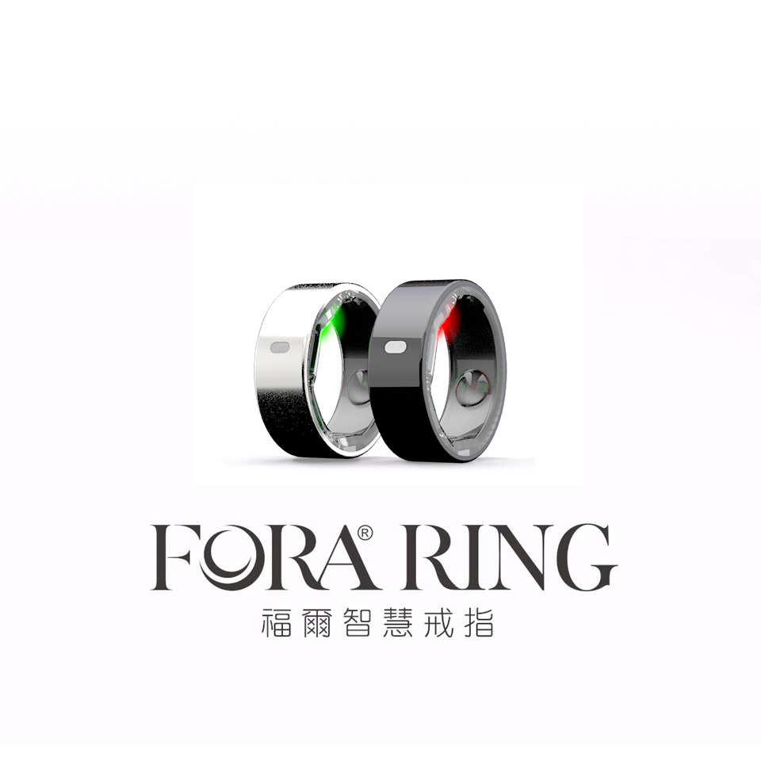
智慧穿戴型號 SR100｜僅 4 公克・續航最長 7 天｜台灣製造
全天舒適配戴，追蹤心率、血氧、體溫、睡眠品質與運動紀錄，AI 分析四大健康風險（體溫異常、心律不規則、睡眠呼吸中止、心血管健康），搭配 iFORA O2 App。戒指約 1.5 小時快速充滿，搭配充電盒可延長使用達 1,200 小時，外出長時間配戴也不怕斷電。
＊本產品為一般健康穿戴裝置，並非醫療器材，所提供數據僅供日常健康參考，不作診斷或醫療用途。
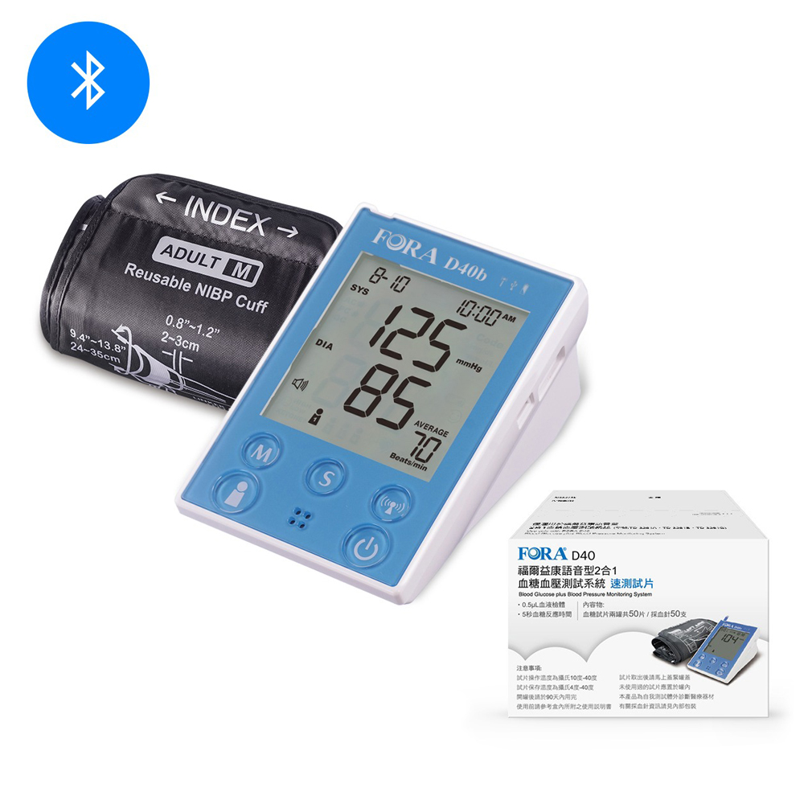
2 合 1 語音型號 V30／TD-4242｜血糖 + 血壓一機量測｜語音播報・舒適加壓｜衛署醫器製字第003109號
單一裝置同時量測血壓與血糖，具語音播報功能，適合銀髮族與慢性病患者居家自我健康監測。
 血糖專用
血糖專用
血糖專用機｜採血量小・操作簡便｜衛部醫器製字第004176號
專注血糖量測的居家血糖機，採血量小、操作簡單，適合糖尿病族群每日自我血糖管理，可搭配專用試片。
 臂式血壓
臂式血壓
型號 TD-3129｜臂式量測・數據穩定｜衛署醫器製字第003362號
臂式數位血壓機，量測位置接近心臟、數據穩定準確，適合高血壓族群居家長期追蹤。
即 FORA O2 系列｜血氧（SpO₂）與脈搏量測・藍牙連線｜衛部醫器製字第006410號
快速量測血氧飽和度與脈搏，適合居家健康監測、銀髮族與慢性呼吸道族群使用，搭配 iFORA O2 App 可記錄長期趨勢。
 紅外線額溫
紅外線額溫
型號 TD-1242｜非接觸・一秒量測｜另有藍牙版｜衛部醫器製字第006076號，北衛器廣字第11103042號
紅外線技術，無須接觸皮膚、一秒完成量測，操作簡便衛生，適合全家與多人快速量測。
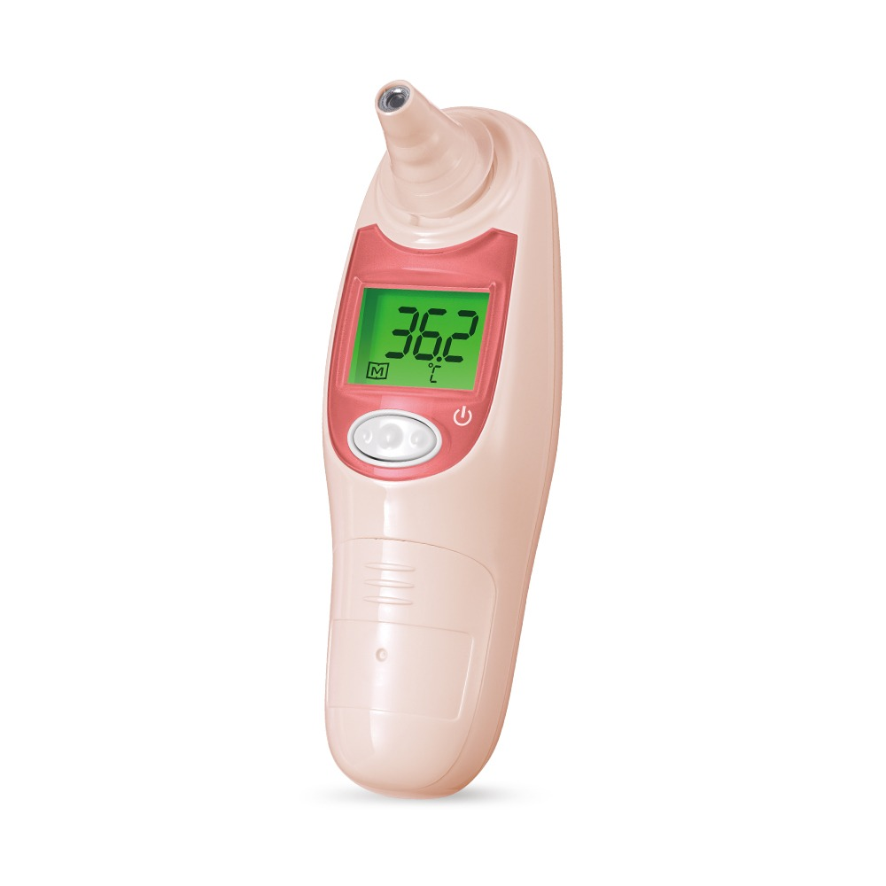
紅外線耳溫耳溫量測・一秒完成｜適合嬰幼兒｜衛署醫器製字第003084號
紅外線耳溫量測，一秒完成、準確穩定，特別適合嬰幼兒與居家全家使用。
型號 TD-2560｜超薄2.5cm・IP21防水防塵・藍牙連線
一機顯示體重、體脂率、內臟脂肪、BMI、肌肉量、骨量、體水分率等10項身體數據，可記錄全家5人專屬資料，搭配 iFORA App 追蹤趨勢。
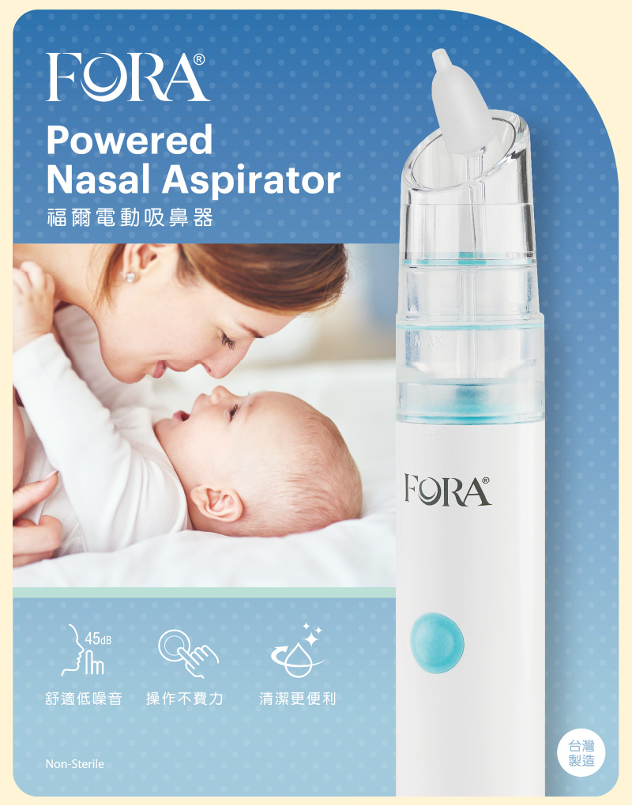
嬰幼兒居家照護型號 TD-7601A｜衛部醫器製壹字第006466號
電動吸鼻設計，操作簡單、可拆洗清潔，適合幫嬰幼兒與感冒鼻塞時居家照護使用。
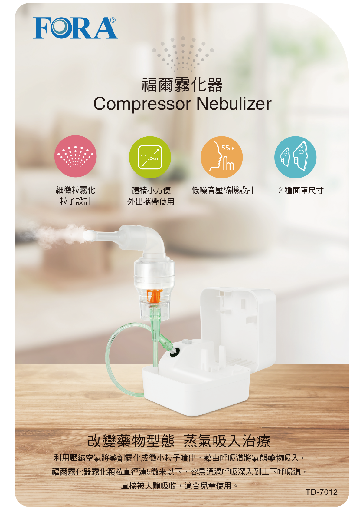
呼吸道照護型號 FORA 7012A｜衛部醫器製字第005530號
居家用霧化器，協助呼吸道用藥吸入治療，適合長輩與呼吸道族群日常照護使用。
提供 FORA MD6、D40 各式試片與耗材：血糖試片、三合一試片（血糖／血紅素／紅血球容積比）、酮體、尿酸、總膽固醇試片，以及採血筆（衛部醫器製壹字第005635號）等，供應穩定。歡迎洽詢長期供貨與團購方案。
※ 標示原價為市售參考價，實際優惠價格與供貨歡迎洽詢游經理。
BLOOD PRESSURE MONITORS
福爾臂式血壓計完整系列，涵蓋語音、藍牙與家用機型。以下產品圖、規格與說明均為 FORA 原廠資料，許可證字號經衛福部資料庫核對。
型號 TD-3130｜衛部醫器製字第005785號｜北衛器廣字第10810053號
語音播報臂式血壓機，具心房顫動（IHB）警示與高血壓分級提示，數據清晰、操作簡單，特別適合銀髮族與需要語音輔助的使用者。

型號 TD-3140A｜衛部醫器製字第005005號｜北衛器廣字第10810053號
臂式血壓機，採用舒適加壓壓脈帶設計，量測過程更舒適、數據穩定，適合居家長期血壓追蹤。

型號 3128BC（藍牙）｜衛署醫器製字第003363號｜北衛器廣字第10902010號
臂式血壓機藍牙版，可連結手機 App 記錄量測趨勢，大螢幕易讀、量測位置接近心臟、數據穩定，適合慢性病長期管理。

型號 3128BC｜衛署醫器製字第003363號｜北衛器廣字第10902010號
臂式血壓機，大螢幕顯示、操作簡單，量測位置接近心臟、數據穩定，適合居家與銀髮族每日血壓量測。

型號 FORA P50｜衛署醫器製字第003212號｜北衛器廣字第10902010號
家護型臂式血壓機，操作簡便、數據穩定易讀，適合家庭共用與居家健康管理。

型號 TD-3127A｜衛署醫器製字第003360號｜北衛器廣字第10902010號
電子臂式血壓機，操作直覺、量測穩定，是居家入門血壓量測的實用選擇。

※ 產品圖片與說明為 FORA 福爾原廠提供；許可證字號經衛生福利部食品藥物管理署醫療器材資料庫核對，廣告核准字號依原廠公告。實際供貨與優惠價格歡迎洽詢游經理。
BLOOD GLUCOSE MONITORS
福爾血糖機與血糖血壓 2 合 1 整合系統，台灣製造。產品圖、規格與說明為 FORA 原廠資料，許可證字號經衛福部資料庫核對。
型號 GD40B（藍牙）｜衛部醫器製字第004176號｜北衛器廣字第11005011號
血糖測試系統藍牙版，採血量小、操作簡便，可連結 App 記錄血糖趨勢，適合糖尿病族群每日自我管理。

型號 4256AB｜衛署醫器製字第003169號｜北衛器廣字第11007013號
背光螢幕血糖機，暗處也易讀，採血量小、操作簡單，適合長輩與居家每日血糖量測。

型號 FORA V30（4242）｜衛署醫器製字第003109號｜北衛器廣字第11007013號
語音播報血糖機，量測步驟有聲音引導，特別適合視力較弱者與銀髮族居家使用。

型號 4241A｜衛署醫器製字第003021號｜北衛器廣字第10804043號
基礎型居家血糖機，操作直覺、採血量小，適合血糖日常追蹤入門使用。

型號 TD-3261B｜衛署醫器製字第003110號｜北衛器廣字第10908035號
單機同時量測血糖與血壓，具語音播報，適合銀髮族與慢性病患者居家整合監測。

※ 產品圖片與說明為 FORA 福爾原廠提供；許可證字號經衛生福利部食品藥物管理署醫療器材資料庫核對，廣告核准字號依原廠公告。實際供貨與優惠價格歡迎洽詢游經理。
TEMPERATURE · SpO₂ · RAPID TEST
福爾體溫計、血氧濃度計與居家抗原快篩。產品圖、規格與說明為 FORA 原廠資料，許可證字號經衛福部資料庫核對。
型號 1035A｜衛部醫器製字第005463號｜北衛器廣字第10811025號
穿戴式電子體溫計，可貼附持續監測體溫變化，適合嬰幼兒與發燒照護時的連續追蹤。
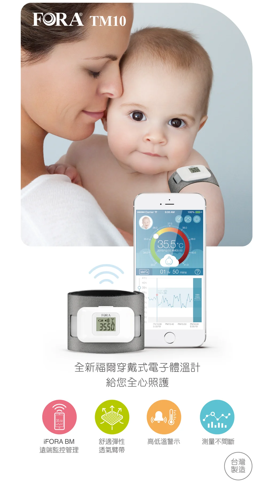
型號 IR18｜衛署醫器製字第003084號｜北衛器廣字第10904016號
紅外線耳溫量測，一秒完成、準確穩定，特別適合嬰幼兒與居家全家使用。
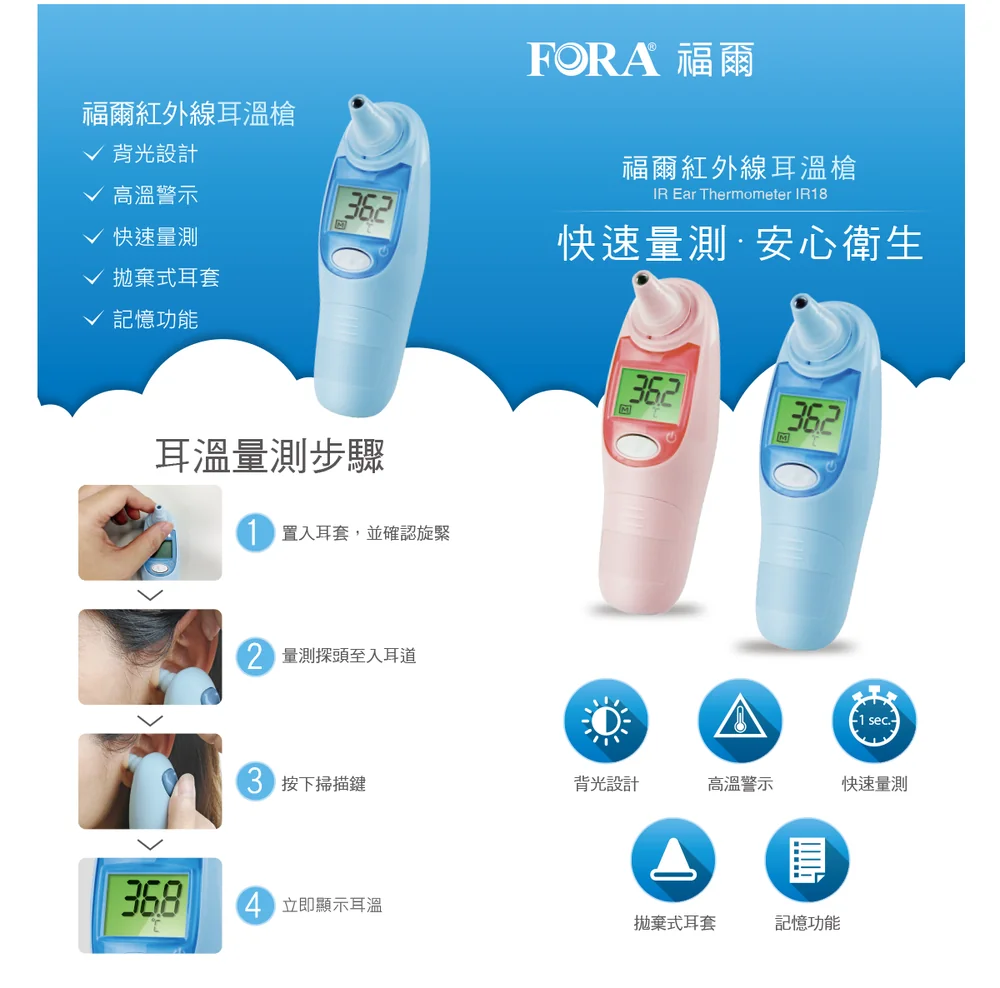
型號 TD-1242｜衛部醫器製字第006076號｜北衛器廣字第11103042號
紅外線非接觸額溫槍，一秒量測、衛生快速，適合居家與多人快速測量。
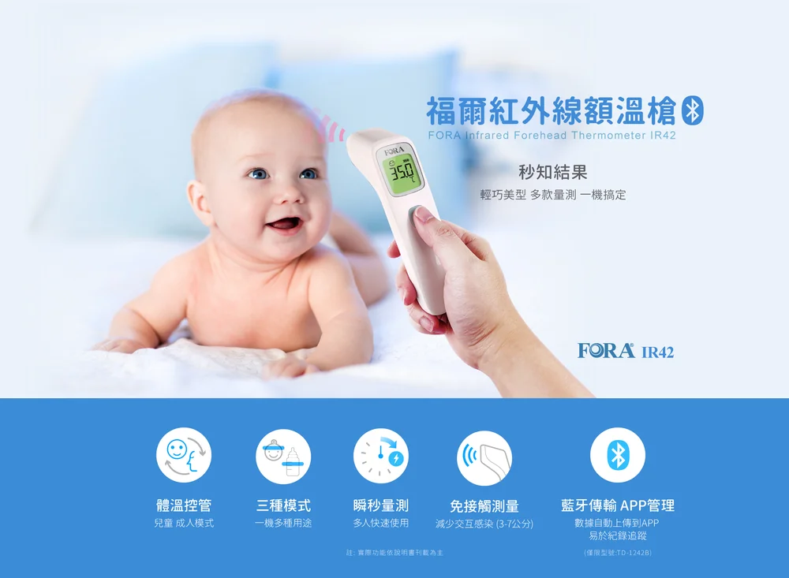
型號 TD-8255AB｜衛部醫器製字第006410號｜北衛器廣字第11310025號
指夾式血氧濃度計，快速量測血氧飽和度（SpO₂）與脈搏，可搭配 iFORA O2 App 記錄趨勢。
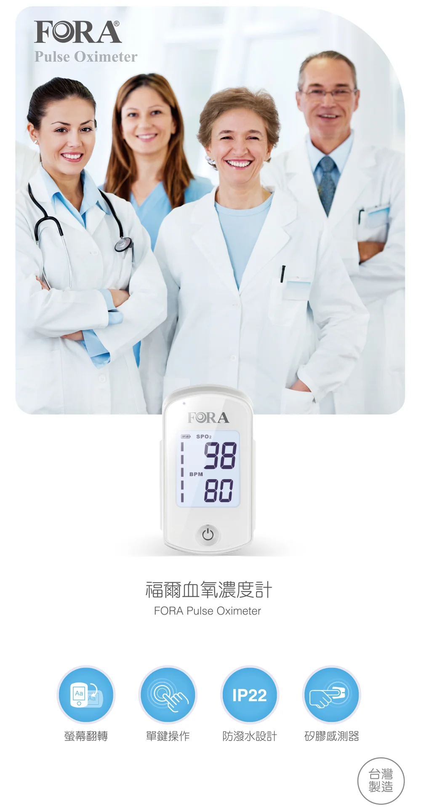
※ 產品圖片與說明為 FORA 福爾原廠提供；許可證字號經衛生福利部食品藥物管理署醫療器材資料庫核對，廣告核准字號依原廠公告。實際供貨與優惠價格歡迎洽詢游經理。
DENTAL MATERIALS
膠原蛋白系列牙科生醫材料，提供診所、牙醫與醫療機構採購洽詢。
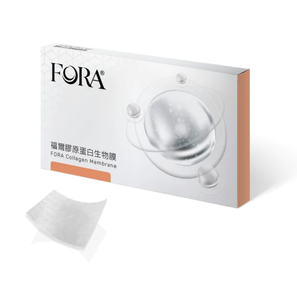
牙科生物材料衛部醫器製字第008316號
純化膠原蛋白可吸收式生物膜，濕潤狀態下結構穩定、可縫合固定，常搭配自體骨或骨替代材料協助骨再生手術。
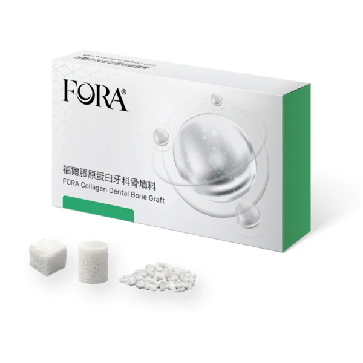
牙科生物材料衛部醫器製字第008317號
天然多孔骨基質，結構近似人骨，含第一型膠原蛋白與天然羥基磷灰石，可隨時間逐漸被自體吸收，無需二次手術取出。
※ 牙科專業材料供診所與醫療機構採購使用，詳細規格與報價請洽業務團隊。
HEALTH MONITORING
協助糖尿病族群掌握每日血糖變化。
居家血壓追蹤，掌握心血管健康。
快速量測體溫，守護全家健康。
整合監測數據，建立長期照護習慣。
WHY CHOOSE US
01
授權經銷
FORA 福爾正式授權經銷，產品來源正貨有保障。
02
專業顧問
提供設備選購與使用諮詢，協助挑選最適方案。
03
售後服務
完善的試紙耗材補給與售後支援，使用無後顧之憂。
04
整合方案
結合健康食品與監測設備，提供整合式健康照護。
WARRANTY & SERVICE
透過愷樂生醫購買 FORA 福爾產品，皆享有原廠保固服務，購買時將協助您完成保固卡簽署，售後問題也由我們專人協助處理。
＊ 保固期限自購買日起算，依產品類別而定，正確型號保固期間以購買時告知為準。
FAQ
挑選血糖機可從準確度、採血量、操作便利性、試紙取得難易度與售後服務五個面向評估。建議選擇符合國際標準（如 ISO 15197）、採血量小、數據易讀的機型，並確認試紙供應穩定。
血糖機準確度主要參考 ISO 15197 標準，該標準要求多數測量值需落在實驗室參考值的一定誤差範圍內。選購時可查看產品是否通過該認證，並定期使用校正液確認機台運作正常。
血糖試紙應存放於陰涼乾燥處，避免高溫、潮濕與陽光直射，取用後應立即蓋緊瓶蓋，並在效期內使用完畢。開封後請留意保存期限，避免影響檢測準確度。
建議固定每日早晚同一時段量測，量測前靜坐休息 5 分鐘、避免咖啡因與運動，手臂與心臟同高，並連續紀錄數據供醫師參考，掌握「722」原則（連續7天、早晚各量、每次2次）。
常見體溫計包括耳溫槍、額溫槍、口腔/腋下電子體溫計等。耳溫與額溫測量快速適合居家與兒童使用；電子體溫計則普遍且經濟。選購可依使用對象與測量便利性考量。